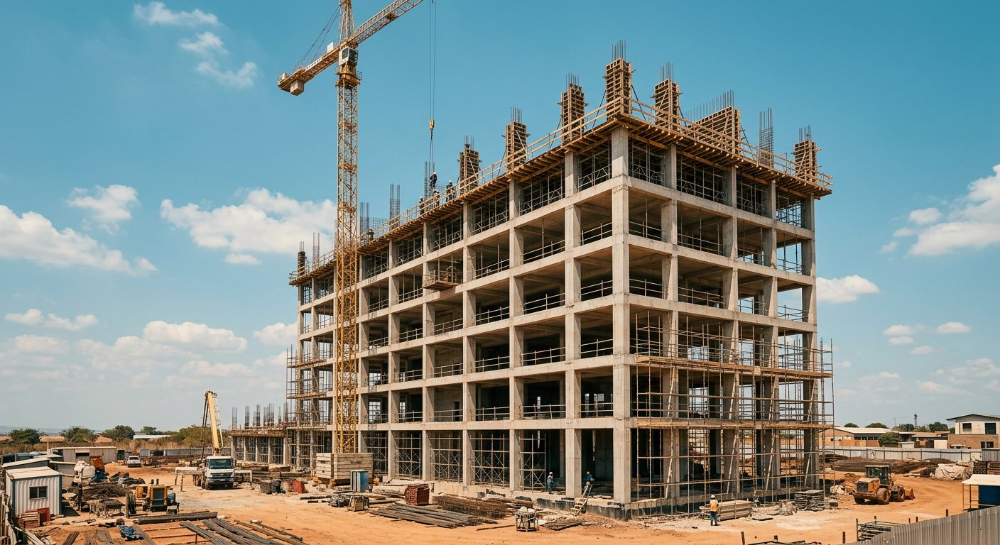

01 — BTPBâtiment et Travaux Publics
Concevoir et construire des ouvrages durables
GLOBAL SOLUTIONS prend en charge vos projets de construction, de l’étude architecturale jusqu’à la réception des travaux. Notre approche allie maîtrise du calcul de structures, qualité d’exécution et suivi rigoureux de chantier, pour des bâtiments et ouvrages publics conçus pour durer.
Prestations proposées
- Construction de bâtiments
- Architecture
- Génie civil
- Études architecturales
- Calcul de structures
- Suivi et contrôle des travaux
Secteurs d’application
Logement, édifices publics, bâtiments commerciaux et industriels, ouvrages d’art et équipements collectifs.